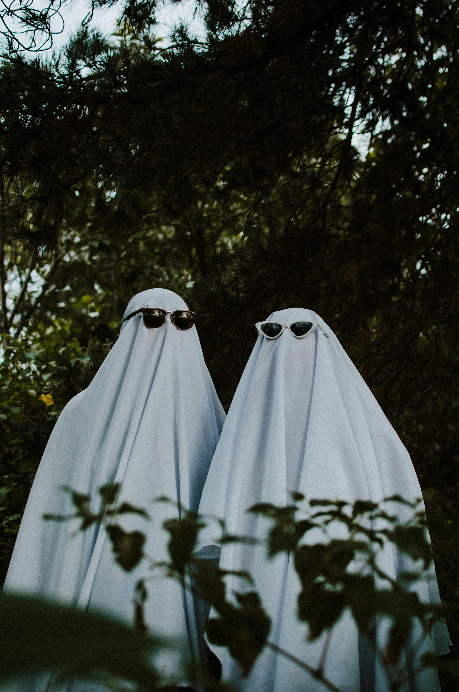

Social Media
Introduction
TikTok and Instagram are two of the biggest social media platforms worldwide that provide endless entertainment to users. These platforms are known for their trends and challenges targeting mostly teens and young adults, including dance challenges, memes, and catchy phrases. Social media entertainment has evolved over time, and we’re ready to inform you of this season’s latest social media trends!
TikTok Trends
One trend that is currently arising is the reminiscing and preparation for the fall season. Various videos show creators with outdoor scenery, cozy homes, and fall décor. Who would love such posts? Another viral trend that’s one of our favorites is the "___aholic" trend. Now this may sound bad, but it's a humorous way of expressing an obsession you have, whether it's scrolling on TikTok, someone you love, or a food/drink. This trend may not have an official name, but the "___aholic" trend is definitely for the history books!

Songs and Audios
Along with certain dance challenges and meme formats, certain songs or audios can either trend along with them or trend on our own. Here are some of our top audios and songs to go viral with this year:
- Duvet - bôa
- Insomniac - Memo Boy
- Oh Klohoma - Jack Sauber
- Sweater Weather - The Neighbourhood
- Stick Season - Noah Kahan
"Duvet" is one of our absolute favorite songs for fall. Originally made by the British band bôa, this song gained some recognition in the late '90s and early 2000s when used in the opening of the anime, "Serial Experiments Lain". It also gained popularity on TikTok in 2021, and since then, it continues to be a song on everyone's fall posts! If you’re looking for some spooky/eerie songs, “Insomniac” and “Oh Klohoma” are our top picks, but you’re more of a cozy person, “Sweater Weather” and “Stick Season” are perfect for you!
Conclusion
Although TikTok and Instagram provide a wide variety of trends for many audiences, we feel that these trends and songs are perfect for this time of year. The reminiscing of a variety of obsessions and the fall season itself go together so well. There are also many audios that can put anyone in a good mood or get them viral. These trends are the perfect way to cleanse your social media feeds and get you ready for fall!